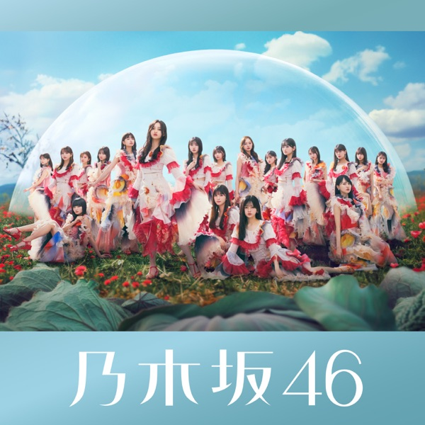

← 楽曲図鑑に戻る

初収録リリース「チートデイ」のジャケット
乃木坂46
発売日：2024-08-21収録：チートデイ（36thSG）種別：ユニット曲作曲：BASEMINT編曲：BASEMINTライブ披露：6件
伊藤理々杏、岩本蓮加、賀喜遥香、田村真佑、池田瑛紗、井上和
チートデイ、落とし物、あの光、君にDitto、懐かない仔猫、Keep in touch、熱狂の捌け口
← 前の曲「落とし物」次の曲「君にDitto」 →
 サカミチ
サカミチ